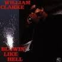
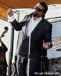
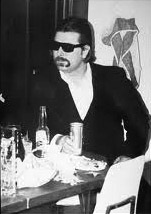
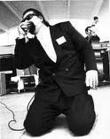
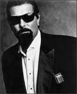
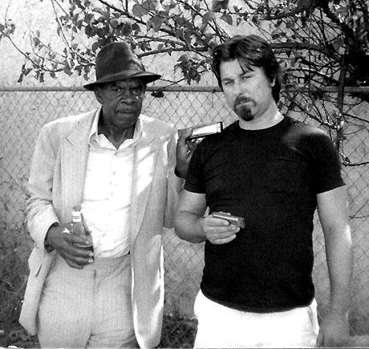

|
20 лет назад, в мае 1991 года газета Los Angeles Times опубликовала интервью с "восходящей звездой блюзовой губной гармоники" Уилльмом Кларком (William Clarke). Вот уже 15 лет, как Уилльям Кларк покинул этот мир - на взлете творческого и коммерческого успеха. К 60-летию со дня рождения Уилльяма Кларка BLUES.RU публикует перевод этого интервью. - Как альбом, гастроли и все такое?  И то, и другое - очень хорошо. Я в разъездах по тридцать дней каждый месяц – через месяц. У меня сеьмя, которую я стараюсь сохранить. Я женат 20 лет. Альбом сейчас занимает первый номер в блюзовых радиопрограммах. На маленьких лейблах я записываюсь с 1977 года, распространение и реклама обычно очень ограничены, а рекламы могло и не быть совсем. Alligator знает свое дело, их "промоушин" просто не сравнить ни с кем.- Почему блюз?  Моя мать всегда любила музыку биг-бэндов и буги-вуги. В середине 60-х, когда вещание FM-радиостанций было в новинку, там играли много блюза и рока. Я как-то привык ходит в черные клубы гетто Лос-Анджелеса. Там не выступали знаменитости, но то, что там играли, меня проняло до печенок. Звук блюза был таким настоящим! Это правда о жизни, и блюз так ритмичен!- Что такое блюз Западного побережья? В противоположность другим частям страны, уэст-коаст-блюз использует больше элементов джаза и свинга, я не знаю, почему. Чикагский блюз содержит гораздо больше рок-н-ролла и больше фанка, но никто не свингует так, как ребята с Западного побережья. - Как вы начали играть на губной гармонике?  Первая "гармошка" появилась у меня, когда мне было 16 лет. Сначала я был барабанщиком, но я не умел собрать барабаны вместе. Еще я немного играю на гитаре, но только для того, чтобы сочинять песни. В общем, я начал околачиваться в этих клубах, и иногда меня пускали поиграть. Одно за другим, и вот я начал играть с небольшими такими группками на малооплачиваемых концертах. В 1977 году я был в группе Шейки Джейка Харриса (Shakey Jake Harris) – он был настоящим чикагским парнем, который тогда перебрался в Лос-Анджелес. А потом однажды Джордж "Гармоника" Смит (George (Harmonica) Smith) сел с нами поджемовать – и он оставил мне свой телефон. Вот так, я ему позвонил, и с этого начались наши долгие отношения. Он стал крестным моего ребенка. В 1983 я бросил свою основную (дневную) работу, и отправился на гастроли со Смитом. Это был мой первый тур, я вел его Кадиллак, и мне платили за то, что я играл и был рядом со Смитом. Он умер в 1983-м, и для меня это был тяжелый удар.- И больше не было работы на зарплате?  Нет, я оставил последнюю в 1987 г. Я был механиком 18 лет. Я работал на аэрокосмическую компанию, где работников звали по фамилии и последним четырем цифрам их социальной страховки. Я сам превращался в машину. Как бы то ни было, моя жена поддерживала меня в том, чтобы уволится и стать музыкантом. Были ведь другие парни, например Джеймс Харман (James Harman) и Чарли Масселвайт (Charlie Musselwhite), и я думал: "Черт, чем я хуже?"- Что самое лучше, а что самое плохое в вашей работе? Самое худшее – это битком набитый автобус. Мы переезжали прямиком с концерта на концерт – иначе было нельзя. Иногда, после того, как мы ехали всю ночь и приезжали в клуб, владелец относился к нам безо всякого почтения. А были другие случаи, когда с нами обращались отлично, кормили обедом. А лучшее – когда вся группа звучит по-настоящему прекрасно - Каким был бы концерт вашей мечты, а каким – самым кошмарным? Думаю, было бы волшебно вернуться в 1957 год, примерно, и сыграть с Мадди Уотерсом (Muddy Waters), может быть, с Литл Уолтером (Little Walter), Отисом Спэнном (Otis Spann) и Пайнтопом Перкинсом (Pinetop Perkins). А кошмаром был один концерт в клубе, когда владелец сказал нам поиграть танцевальную музыку. И я ответил: "Если тыне может танцевать под нашу музыку, значит, что-то не так с тобой". Мы прекратили выступление и не получили денег. - Дела у блюза идут лучше, хуже, или как? Блюз становится более популярным, и это благодаря таким ребятам как Роберт Крей (Robert Cray) и Стиви Рэй Воон (Stevie Ray Vaughan) – их музыка завоевала много новых слушателей. Когда я был моложе, я услышал, как "Стоунз" играли Мадди Уотерса, и мне захотелось копнуть глубже. Как, например, песня Воона "Потоп в Техасе" (Texas Flood) на самом деле была написана старым парнем из Арканзаса. Как бы то ни было, в конце 70-х пришло диско, и туго пришлось всем. Никто не хотел приглашать выступать блюзовых парней. Я теперь я работаю по всему городу. Когда мы гастролируем, у меня всего три-четыре свободных вечера за месяц. - Блюзменам дают скидку при покупке черных очков?  Я давно ношу черные очки, отчасти потому что нужно носить защитные очки, когда работаешь механиком. И черные костюмы я начал надевать задолго до того, как кто-то узнал о "Братьях Блюз" (Blues Brothers). Я уже устал от людей, которые говорят мне, что я выгляжу как они. Я делал это раньше них.- А почему так получается, что блюза нет на MTV? В MTV крутятся большие деньги. Мой лейбл, Alligator, - это крупнейший блюзовый лейбл. Но в сравнении с Capitol они ничто. - Какое самое большое недопонимание в восприятии блюза? Проблема в том, что многие считают блюз тяжелой депрессивной штуковиной. Я полагаюсь на блюз, чтобы чувствовать себя хорошо, весело – тогда мне даже пиво не нужно. Блюз – это жизнь и чувства. - Какой лучший совет из тех, что вам дали? - Джордж Смит объяснил мне, что не надо играть так много нот. Надо, чтобы все ноты были наперечет. - Что будет дальше? Прошлым вечером мы начали работу над новым альбомом для Alligator. Я так же записал рождественскую песню для специально "Аллигаторовской" антологии. Еще я работаю над сборным блюзовым альбомом для голландской фирмы. Я вытащил из гетто многих парней, чтобы они поучаствовали в этом альбоме. Перевод @А.В.Евдокимов, 2011  |
Blues.Ru - Новости | Музыканты | Стили | CD Обзор | Концерты | Live Band | Лента | Форум